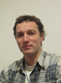

Authors
The authors of MrBayes listed in alphabetical order:
 John
Huelsenbeck is an Associate Professor in the Section of Ecology,
Behavior & Evolution at the University of California at San Diego. He
is interested in theoretical phylogenetics, particularly Bayesian
estimation of phylogeny, and in the genetics of adaptation.
John
Huelsenbeck is an Associate Professor in the Section of Ecology,
Behavior & Evolution at the University of California at San Diego. He
is interested in theoretical phylogenetics, particularly Bayesian
estimation of phylogeny, and in the genetics of adaptation.
 Bret Larget is an
Associate Professor with joint appointment in the Departments of
Botany and of Statistics at the University of Wisconsin-Madison. His
research interests are in statistical aspects of bioinformatics and
computational biology, especially Bayesian phylogeny estimation and
models of molecular and genomic evolution.
Bret Larget is an
Associate Professor with joint appointment in the Departments of
Botany and of Statistics at the University of Wisconsin-Madison. His
research interests are in statistical aspects of bioinformatics and
computational biology, especially Bayesian phylogeny estimation and
models of molecular and genomic evolution.
 Paul van der Mark is a
postdoc at the Ronquist Lab in the
School of Computational
Science at the Florida State
University. He is interested in computational biology and
parallel computing.
Paul van der Mark is a
postdoc at the Ronquist Lab in the
School of Computational
Science at the Florida State
University. He is interested in computational biology and
parallel computing.
 Fredrik Ronquist is a
Professor in the Dept. of Biodiversity Informatics at the Swedish Museum of Natural History. His
research interests include computational Bayesian phylogenetics,
hymenopteran systematics and evolution, and biodiversity informatics.
In addition to the MrBayes project, Fredrik is also involved in the
MorphBank project, the
Swedish
Taxonomy Initiative and the DINA project.
Fredrik Ronquist is a
Professor in the Dept. of Biodiversity Informatics at the Swedish Museum of Natural History. His
research interests include computational Bayesian phylogenetics,
hymenopteran systematics and evolution, and biodiversity informatics.
In addition to the MrBayes project, Fredrik is also involved in the
MorphBank project, the
Swedish
Taxonomy Initiative and the DINA project.
Donald
Simon is an Associate Professor in the Department of
Mathematics and Computer Science at Duquesne University, Pittsburgh,
PA. He is interested in computational biology, in particular in
Bayesian estimation of phylogeny, and high performance
computing.
 Maxim Teslenko is
a research programmer in the Dept. of Biodiversity Informatics at the
Swedish Museum of Natural History.
He is interested in computational biology and various aspects of
electronic system design such as logic syntheses, formal
verification, design of fault tolerant systems, etc.